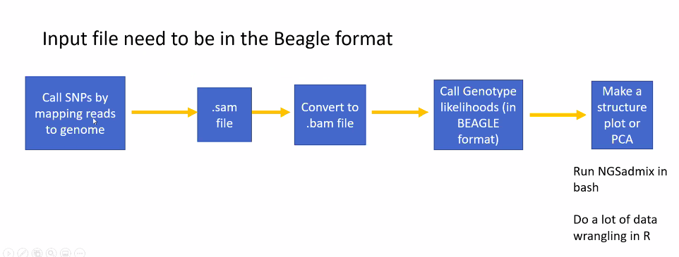
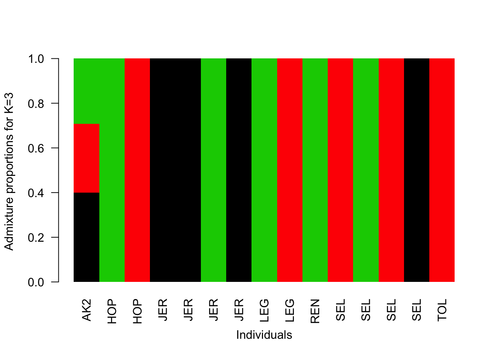
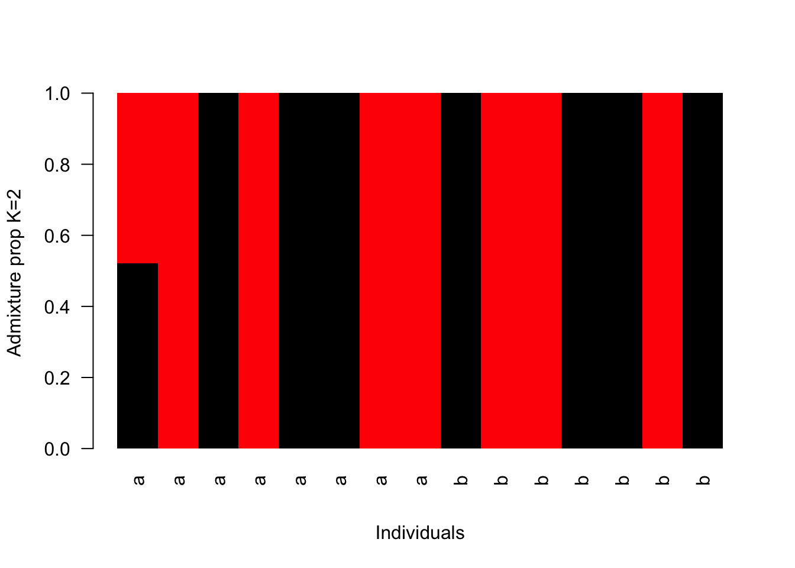
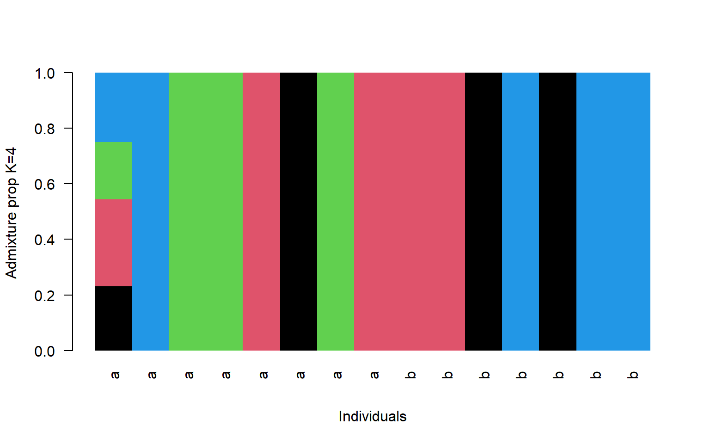

10 Week 9- Population Structure using NGSadmix
For this week we will be exploring another way to document population genetic structure (the first way we covered was PCA in Week 6) via a “Structure” plot implemented in the ANGSD program NGSadmix.
We’ll be using data from the Xuereb et al. paper on P. californicus. This data is a subset of the data published in the paper and is SNP data from 15 individuals from 7 collection sites, in a beagle formated file (the same one we used for our PCA plot in week 6).
The lecture for this week can be found here and describes the basics of a structure plot.
10.1 Download the data
wget https://raw.githubusercontent.com/BayLab/MarineGenomicsData/main/week9.tar.gz
tar -xzvf week9.tar.gz
You will also need to tar the file within the Week9 folder
cd MarineGenomicsData/Week9
tar -xzvf structure_outs.tar.gz10.2 Using NGSadmix
NGSadmix is located within the program ANGSD. It’s pretty simple to run and will generate an output file that we can load into R to generate the stucture plot. NGSadmix uses a maximum-likelihood framework to analyse genotype likelihoods, other methods of analyzing population structure including the program STRUCTURE are Bayesian methods and are not modified to be run with genotype likelihoods (but are otherwise widely used and very suitable methods). 
Let’s start by running NGSadmix on our beagle file to generate the file for R.
The parameters we need to specify to run NGSadmix are the number of clusters (-K), the minimun minor allele frequency (-minMaf), and the number of threads (-P), and an output file name (-o). You can find the full description of each of these parameters on the NGSadmix site
The most important thing for us to modify is the number of clusters (-K). This is the paramter we actually want to estimate.
../../angsd/misc/NGSadmix -likes genolike_beagle.beagle.gz -K 3 -minMaf 0.05 -seed 1 -o stru_k3 -P 10
The first part of this code directs from our MarineGenomicsData/Week9 direcotry to the location of the NGSadmix executable located in the misc folder in the angsd program.
We then specify the genotype likelihood file in beagle format with the -like parameter. The remaining parameters are as explained above.
This will output three files which all start with our stru_k5 file name. We have a .log file that tells us the loglikihood values and what parameters were run, a .fopt file contains the estimated allele frequencies, and a .qopt file that contains the individuals ancestry proportion (or admixture).
We’ll use the .qopt file to make our plot in R.
10.3 ploting stucture in R
Open a new Rscript in RStudio.
#read in the data
q<-read.table("stru_k3.qopt")
#read in the population information file located in the bam.filelist
pop<-read.table("bam.filelist")
#order it by population
ord<-order(pop$V2)
barplot(t(q)[,ord],
col=1:3,
names=pop$V2[ord],
las=2,
space=0,
border=NA,
xlab="Individuals",
ylab="Admixture proportions for K=3")
#read in the data
q<-read.table("stru_k7.qopt")
#read in the population information file located in the bam.filelist
pop<-read.table("bam.filelist")
#order it by population
ord<-order(pop$V2)
barplot(t(q)[,ord],
col=1:7,
names=pop$V2[ord],
las=2,
space=0,
border=NA,
xlab="Individuals",
ylab="Admixture proportions for K=7")
So now we have many more groupings, but they don’t really fall straight across population lines do they?
This shows that we can generate two fairly different looking plots when we change the value of K. How do we tell which one is the “True” value of K? One way is to look at the log-likelihood values from each NGSadmix run.
10.4 How do we know which K to pick?
In order to get an accurate estimate of the “best” K for our data we need to run NGSadmix on our data for several K values. These values are included in the .tar folder labeled structure_outs. In this example ran NGSadmix for K values 1:7.
We need to read each of these K files into R and pull out the log-likehood values. We’ll then do a test via the Cluster Markov Packager Across K from Evanno which can be seen here
#read in the data
data<-list.files("structure_outs/", pattern = ".log", full.names = T)
#look at data to make sure it only has the log files
data
#> [1] "structure_outs/stru_k1.2.log" "structure_outs/stru_k1.3.log"
#> [3] "structure_outs/stru_k1.log" "structure_outs/stru_k2.2.log"
#> [5] "structure_outs/stru_k2.3.log" "structure_outs/stru_k2.log"
#> [7] "structure_outs/stru_k3.1.log" "structure_outs/stru_k3.2.log"
#> [9] "structure_outs/stru_k3.3.log" "structure_outs/stru_k4.2.log"
#> [11] "structure_outs/stru_k4.3.log" "structure_outs/stru_k4.log"
#> [13] "structure_outs/stru_k5.2.log" "structure_outs/stru_k5.3.log"
#> [15] "structure_outs/stru_k5.log" "structure_outs/stru_k6.2.log"
#> [17] "structure_outs/stru_k6.3.log" "structure_outs/stru_k6.log"
#> [19] "structure_outs/stru_k7.2.log" "structure_outs/stru_k7.3.log"
#> [21] "structure_outs/stru_k7.log"
#use lapply to read in all our log files at once
bigData<-lapply(1:21, FUN = function(i) readLines(data[i]))
# find the line that starts with "best like=" or just "b"
library(stringr)
#this will pull out the line that starts with "b" from each file and return it as a list
foundset<-sapply(1:21, FUN= function(x) bigData[[x]][which(str_sub(bigData[[x]], 1, 1) == 'b')])
foundset
#> [1] "best like=-3535959.455618 after 12 iterations"
#> [2] "best like=-3535959.455618 after 12 iterations"
#> [3] "best like=-3535959.455618 after 12 iterations"
#> [4] "best like=-3308469.603529 after 250 iterations"
#> [5] "best like=-3312314.435844 after 300 iterations"
#> [6] "best like=-3318928.120535 after 440 iterations"
#> [7] "best like=-3136880.875876 after 250 iterations"
#> [8] "best like=-3144328.694755 after 250 iterations"
#> [9] "best like=-3141386.218416 after 672 iterations"
#> [10] "best like=-3006651.601488 after 210 iterations"
#> [11] "best like=-3000275.945373 after 184 iterations"
#> [12] "best like=-3000534.312886 after 250 iterations"
#> [13] "best like=-2892659.793895 after 657 iterations"
#> [14] "best like=-2881306.372706 after 650 iterations"
#> [15] "best like=-2874661.629230 after 600 iterations"
#> [16] "best like=-2771520.855761 after 450 iterations"
#> [17] "best like=-2776458.073377 after 229 iterations"
#> [18] "best like=-2774537.683445 after 487 iterations"
#> [19] "best like=-2690599.496764 after 250 iterations"
#> [20] "best like=-2671043.271473 after 300 iterations"
#> [21] "best like=-2694025.576965 after 233 iterations"
#we're getting there!
#now we need to pull out the first number in the string, we'll do this with the function sub
as.numeric( sub("\\D*(\\d+).*", "\\1", foundset) )
#> [1] 3535959 3535959 3535959 3308469 3312314 3318928 3136880 3144328 3141386
#> [10] 3006651 3000275 3000534 2892659 2881306 2874661 2771520 2776458 2774537
#> [19] 2690599 2671043 2694025
#now lets store it in a dataframe
#make a dataframe with an index 1:7, this corresponds to our K values
logs<-data.frame(K = rep(1:7, each=3))
#add to it our likelihood values
logs$like<-as.vector(as.numeric( sub("\\D*(\\d+).*", "\\1", foundset) ))
#and now we can calculate our delta K and probability
tapply(logs$like, logs$K, FUN= function(x) mean(abs(x))/sd(abs(x)))
#> 1 2 3 4 5 6 7
#> Inf 626.2926 837.2806 832.0035 316.7629 1114.4881 216.5752We then use these values to select our K, which will be the one that has the highest value, so in this case 6. Note these values are rather high because our variance is so low. We would normally want to re-run the NGSadmix analyses more than 3 times to generate these values, but this illustrates the process.
10.5 Exercises
Practice Questions:
- Remake the structure plot using K=6
.qopt. You’ll find this file in thestructure_outsfile.
Solution
q<-read.table("stru_k6.qopt")
#read in the population information file located in the bam.filelist
pop<-read.table("bam.filelist")
#order it by population
ord<-order(pop$V2)
barplot(t(q)[,ord],
col=1:6,
names=pop$V2[ord],
las=2,
space=0,
border=NA,
xlab="Individuals",
ylab="Admixture proportions for K=6")
- Make a multi-panel plot showing K=2, K=4, and K=6. You can set the parameters of the plot screen to allow three rows and one column using par(mfrow=c(3,1)). For this plot use the region identifier instead of the name (V3 in the bam file so pop$V3)
Solution
#read in all the data
q2<-read.table("stru_k2.qopt")
q4<-read.table("stru_k4.qopt")
q6<-read.table("stru_k6.qopt")
#read in the population information file located in the bam.filelist
pop<-read.table("bam.filelist")
#order it by population
ord<-order(pop$V3)
#set the parameters for our screen to show three rows and one column
par(mfrow=c(3,1))#plot the plots
barplot(t(q2)[,ord],
col=1:2,
names=pop$V3[ord],
las=2,
space=0,
border=NA,
xlab="Individuals",
ylab="Admixture prop K=2")
barplot(t(q4)[,ord],
col=1:4,
names=pop$V3[ord],
las=2,
space=0,
border=NA,
xlab="Individuals",
ylab="Admixture prop K=4")
barplot(t(q6)[,ord],
col=1:6,
names=pop$V3[ord],
las=2,
space=0,
border=NA,
xlab="Individuals",
ylab="Admixture prop K=6")10.6 Creature of the Week!
The Bearded Fireworm (image credit: Philippe Guillaume via Flickr)